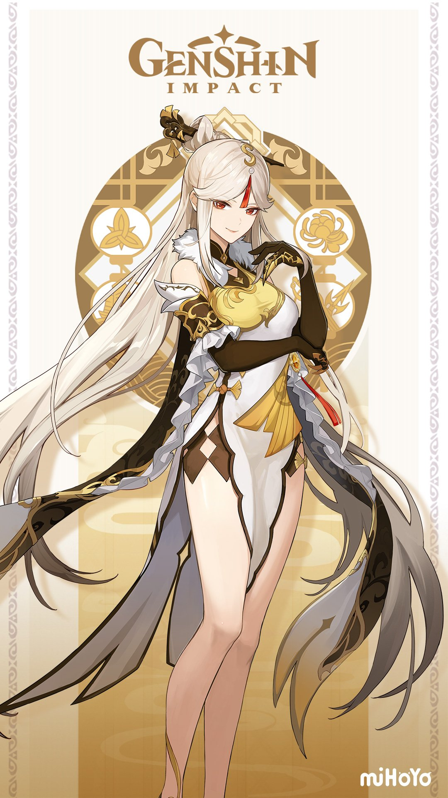

|
Genshin Impact is an action role-playing game developed and published by miHoYo, a Chinese video game company. The game was released in September 2020 for Windows, PlayStation 4, PlayStation 5, iOS, and Android, with a Nintendo Switch version planned for release in the future. The game is set in the fantasy world of Teyvat, where players take on the role of a character known as the Traveler, who is searching for their lost sibling. The game features an open-world environment with a variety of landscapes, such as mountains, forests, and rivers. Players can explore the world, complete quests, and battle enemies with a party of up to four characters. Genshin Impact's combat system is based on elemental magic, where characters can use different elemental powers to create combos and deal damage to enemies. The game also features a gacha system, where players can use in-game currency or real money to obtain new characters and weapons. The game has received positive reviews for its graphics, gameplay, and storyline, as well as for its soundtrack, which was composed by multiple award-winning composers. Genshin Impact has also been praised for its cross-platform play, which allows players on different devices to play together. However, the game has also been criticized for its monetization practices and the need to spend money to obtain the best characters and equipment. Despite this, Genshin Impact has become a popular game with millions of players around the world, and miHoYo has continued to release new content and updates to keep the game fresh and engaging. Learn More |
 |